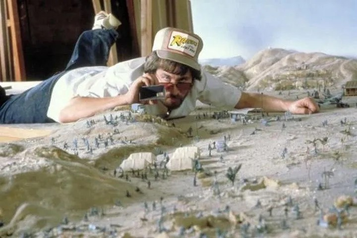
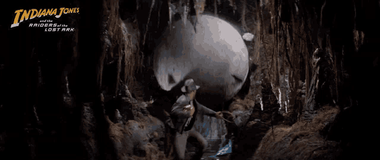
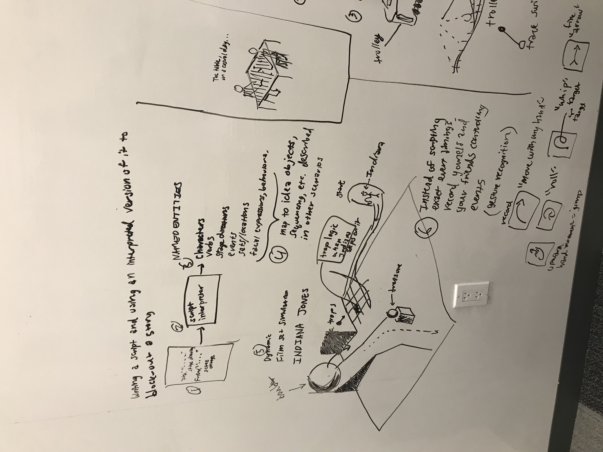
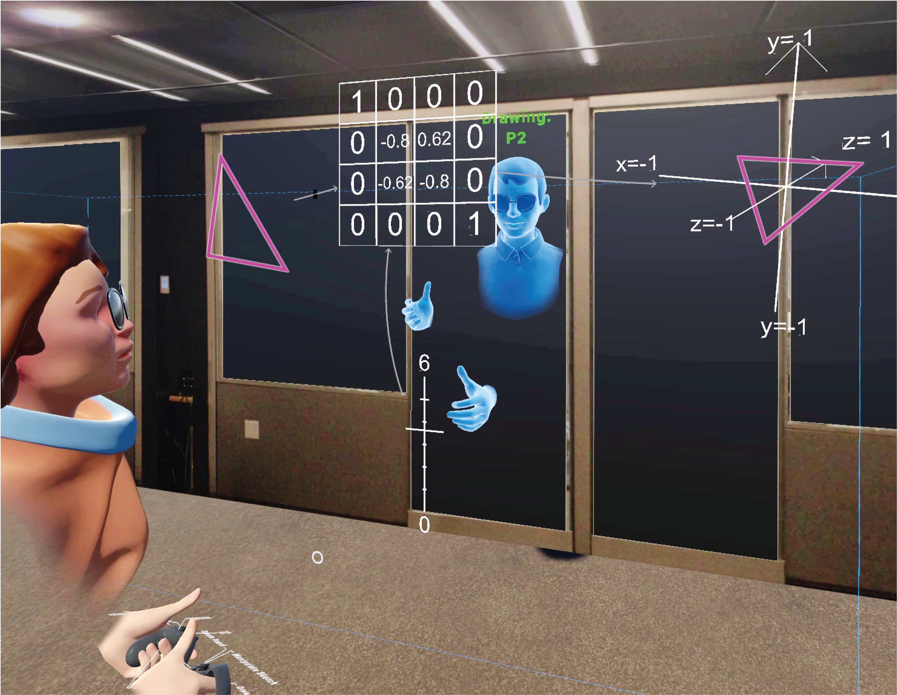
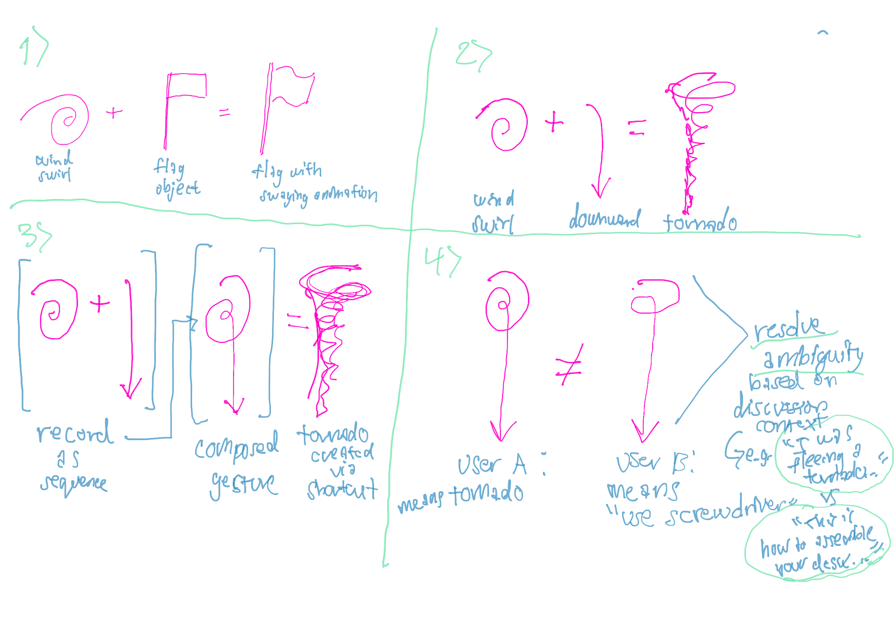
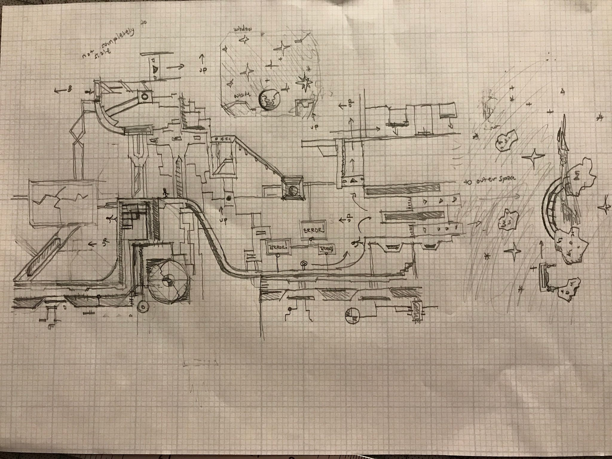

Karl Toby Rosenberg
Contact: karltobyrosenberg [-at-] nyu [-dot-] edu
See my teaching materials page
See my thesis project page
Q: How do people use their senses in physical space to act-out ideas? Project T-Time (Puppet-Theater style puppeteering or teaching over a cup of tea)
Imagine how film directors use physical props to envision the action


Combined with rough sketching

and make it possible to brainstorm and act-out ideas by using tracked ordinary physical objects and freehand sketches in 3D augmented reality, just over a cup of tea when having a conversation
I previously co-developed and co-supported collaborative VR systems for co-located interaction between people



Q: How do people write stories together, and how to support them using a computational system while respecting creative agency? Project Tapestree (contribute to a story by weaving ideas and exploring trees of possibility) - this is an early-stage project with incoming Cornell Tech Faculty Max Kreminski.


I'm interested in the creative design process for games from sketching to realized playable prototypes. Here's something from the archive from a long time ago when I was playing and making things with the amazing game-making game, LittleBigPlanet 2 by Media Molecule!